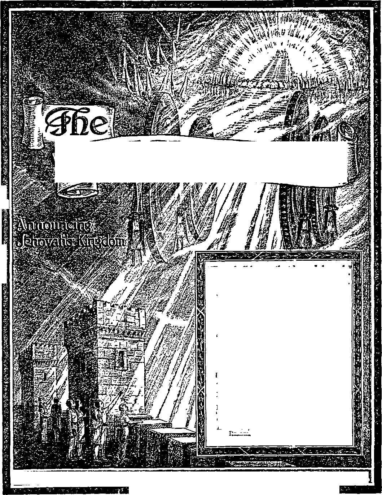

¥:
£
ras
-Ezekiel 35:15.
Vol. LXVII Semimonthly No. 21
CONTENTS
NOVEMBER 1, 1946
“Let God Prove to Be True”.......
What Authority Has the Bible! Religious Traditions.......................
Added...............................................
Authority of Higher Powers
Not Disregarded.........................
Resolution .........................................
A Choice Between
Life and Destruction.............
Nathan and Gad, Prophets and Historians ................................
Field Experiences...........................
“Nations’ Gladness” Testimony Period 322
“Watchtower” Studies .............
Attention, Alt. “Watchtower” Readers! ..................................
323
324
327
329
330
332
332
334
336
322
322
PVBLTSHF.D SEMIMONTHLY By
WATCH TOWER BIBLE & TRACT SOCIETY 117 Adams Street - - Brooklyn 1, N.Y., U.S.A.
Officers
N. H. Knorr, President W. E. Van Ambubgh, Secretary
“And all thy children shall be taught of Jehovah; and great shall be the peace of thy children.” - Isaiah 54:13.
THE BIBLE CLEARLY TEACHES
THAT JEHOVAH is the only true God, from everlasting to everlasting, and Is the Maker of heaven and earth and Giver of life to his creatures; that the Word or Logos was the beginning of his creation and his active agent in creating all other things; and that the creature Lucifer rebelled against Jehovah and raised the issue of His universal sovereignty;
THAT GOD created the earth for man, made perfect man for the earth and placed him upon it; that man yielded to unfaithful Lucifer, or Satan, and willfully disobeyed God's law and was sentenced to death; that by reason of Adam’s wrong act ail men are born sinners and without the right to life;
THAT THE LOGOS was made human as the man Jesus and suffered death in order to produce the ransom or redemptive price for obedient men: that God raised up Christ Jesus divine and exalted him to heaven above every other creature and clothed him with all power and authority as head of God’s new capital organization;
THAT GOD’S CAPITAL ORGANIZATION Is a Theocracy called Zion, and that Christ Jesus Is the Chief Officer thereof and is the rightful King of the new world; that the faithful anointed followers of Christ Jesus are Zion’s children, members of Jehovah's organization, and are His witnesses whose duty and privilege it is to testify to Jehovah’s supremacy nnd declare his purposes toward mankind as expressed in the Bible;
THAT THE OLD WORLD, or Satan’s uninterrupted rule, ended A.D. 1914, and Christ Jesus has been placed by Jehovah upon the throne, has ousted Satan from heaven, and now proceeds to vindicate His name and establish the "new earth”;
THAT THE RELIEF and blessings of the peoples can come only by Jehovah's kingdom under Christ, which has begun; that His next great act is to destroy Satan’s organization and establish righteousness completely in the earth ; and that under the Kingdom the people of good-will surviung Armageddon will carry out the divine mandate to “fill the earth’’ with righteous offspring, and that the human dead in the graves will be raised to opportunities of life on earth.
ITS MISSION
HIS journal Is published for the purpose of enabling the people to know Jehovah God and his purposes as expressed In the Bible. It publishes Bible Instruction specifically designed to aid Jehovah’s witnesses and all people of good-wilL It arranges systematic Bible study for Its readers and the Society supplies other literature to aid In such studies. It publishes suitable material for radio broadcasting and for other means of public instruction in the Scriptures.
It adheres strictly to the Bible as authority for its utterances. It is entirely free and separate from all religion, parties, sects or other worldly organizations. It is wholly and without reservation for the kingdom of Jehovah God under Christ his beloved King. It Is not dogmatic, but invites careful and critical examination of Its contents in the light of the Scriptures. It does not indulge In controversy, and its columns are not open to personalities.
Yearly Subscription Price
United States, $1.00: all other countries. $1.50, American currency; Great Britain, Australasia, and South Africa, 6s. American remittances should be made by Postal Note cr by Postal or Express Money Order or by Bank Draft Outside of the United States remittances should be made direct to the respective branch offices. Remittances from countries other than those mentioned may be made to the Brooklyn office, but by international Postal Money Order only.
Foreign Offices
Australia_____________7 Beresford Rd., Strathfleld, N. S. W
Canada 40 Irwin Ave., Toronto 5. Ontario
England __.._________34 Craven Terrace, London, W 2
India___________________________________ 167 Love Lane, Bombay 27
Newfoundland________,____P. O. Box 521. St. John’s
New Zealand 177 Daniell St., Wellington. S. 1
Philippine islands 1210-B Oroquleta St., Manila South Africa 623 Boston House, Cape Tow n
Please address the Society in every case.
Translations of this journal appear In several lanxnaKes.
ALL SINCERE STUDENTS OF THE BIBLE who by reason of Infirmity, poverty or adversity are unable to pay the subscription price may have The Watchtower free upon written application to the publishers, made once each year, stating the reason for so requesting 1L We are glad to thus aid the needy, but the written application once each year is required by the postal regulations.
Notice to Subscribers: Acknowledgment of a new or a renewal subscription will be sent only when requested. Change of address, when requested, mav be expected to appear on address label within one month. Old and new addresses must be given. A renewal blank (carrying notice of expiration! will be sent with the journal one month before the subscription expires.
Printed In the United States of America
Entered as second-class matter at the post office at Brooklyn, N. 7., under the Act of March S, 1873.
“NATIONS’ GLADNESS” TESTIMONY PERIOD
“Nations’ Gladness” Testimony Period coincides with the last month of this calendar year, the yeartext for which is, “Be glad, ye nations, with his people.” (Rom. 15:10, Rotherham) A new booklet was specially prepared to be ready for delivering the testimony in this month of December, namely, “The Prince of Peace", and an edition of five n'Wion copies is being run off. This anticipates a wide and intens ,e distribution. That many others may conveniently be provided with copies to join in the distribution, the Kingdom publishers will specialize during December on placing the booklet from house to house, offering seven copies on a contribution gf twenty-five cents, three copies ten cents, and one copy five cen 3. Its message deserves the widest reading, and the call for distributors is urgent. If you see your opportunity to take part with others in this house-to-house distribution, write us now for needed information and references. That the general report of all activity during the “Nations’ Gladness” Testimony Period may be compiled here, we remind you to turn m your report of field work during December.
“WATCHTOWER” STUDIES
Week of December 1: “Let God Prove to Be True.” fl 1-24 inclusive, The Watchtower November 1, 1946. Week of December 8: “Let God Prove to Be True,” fl 25-45 inclusive, The Watchtower November 1, 1946.
ATTENTION, ALL “WATCHTOWER” READERS!
During December the Watchtower Society is releasing for general distribution its new publication, the 64-page booklet entitled “The Prince of Peace”. During December the thoughts and professions (if only outwardly) of all nations of Christendom turn to sentiments of peace and good-will, but always the people are left without real knowledge of how ever-enduring peace is to come to all men of good-will on this earth. The booklet “The Prince of Peace” contains a distinctly different, and most up-to-date message, showing how peace is certain to come, and the human make-shift for world-wide peace and security will fail, so that people now need to be warned and to be given straight Scriptural instruction. Reading the booklet and its several features will make you want to pass it out to others. Out of regard for the importance of this information at this most unusual, destinyshaping time, the Watchtower Society would like to aid you in seeing that “The Prince of Peace" gets the wide circulation that will most benefit the people. Therefore we make a special offer of 30 copies of this beautiful booklet to all our Watchtower readers on a contribution of just $1.00, all mailed to the one address postpaid. Thereafter you can join the scores of thousands who will begin circulating “The Prince of Peace” during December, giving it to whomsoever you will either gratis or on the regular contribution announced elsewhere on this page, just as you choose.
Vol. LXVII November 1,1946 No. 21
"But let God prove to be true, albeit every man be false!"—Rom. 3: 4, Rotherham.
JEHOVAH God, at this period of human history, I stands bound by his own word to prove that he J is true. He will give the proof without fail. Seeing such a certainty, it is wise for men to now give the truth to Jehovah God. Those who do not do so are certain to become more and more entangled in the way of error and falsehood and be destroyed for lack of vision. By a course of action contrary to His word, all the world has called into question the truth of Jehovah God, and now the time is here for it to be established what is the truth.
2 Where is the unchangeable truth of this God to be found? It is to be found in the Book that has the greatest circulation of any book in existence, now in 1,068 languages, and that is the Bible, or Holy Scriptures. Therefore it is available to the greatest number both of critics and of truth-seekers. This spreading of the Scriptures has been accomplished despite tremendous religious opposition. God has not been behind the religious opposition to the putting of the Bible into the hands of the people in their language. He has not feared to have the people examine his word in print and to check up on what it says and compare it with his works and operations. Otherwise he would not have arranged for his words and prophecies and the history of his past deeds to go on record, in the first place, for reading and study.
3 Jehovah God takes the responsibility for the Bible and prominently associates his name with it. Although it was written by men who acted as his servants, he was its Author, for he inspired and dictated and guided the writing of it. It was not a personal or private release from the brain or pen of the men who wrote its many books over a period of sixteen hundred years, but was produced by God's invisible “guiding force that moved upon such writers. This is stated by one of the Bible writers himself, Peter, who seeks to build up confidence in God’s word of prophecy, saying: “Knowing this first, that no prophecy of scripture is of private interpretation. For no prophecy ever came by the will of man: but 1. To whom should men now give the truth, and why?
2. Where is God’s truth to be found? and what shows his fearlessness of lettmg the people have approach to such?
3. Who is responsible for the Bible’s production, and how so? men spake from God, being moved by the holy spirit.” —2 Pet. 1: 20, 21, Am. Stan. Ver.
* Throughout the pages of that God-inspired Book its writers declare His truthfulness. Writes the psalmist: “Quicken me, 0 Jehovah, according to thy lovingldndness: The sum of thy word is truth; and every one of thy righteous ordinances endureth for ever.” (Ps. 119:159,160, Am. Stan. Ver.) The first Bible writer, Moses, says: “Jehovah, a God merciful and gracious, slow to anger, and abundant in loving-kindness and truth.” (Ex. 34:6, Am. Stan. Ver.) Such declarations stand as challenges to men who question the truth of God and of his written Word, the Bible. They stand as guarantees to us that the Bible is the standard by which the truth is to be measured.
5 In making this statement we expose ourselves to the charge of idolatry of the Bible, or bibliolatry, as some choose to call it. Bibliolatry, as defined by a standard dictionary, is “worship of the Bible”, or a person’s “absolute submission to a group of sacred writings as the plenary depository of the Divine Spirit and, as such, infallible and authoritative’’.’' It has been charged that this so-called bibliolatry is responsible for the dividing up of Protestantism into hundreds of sects, each claiming to take the Bible as its sole guide and as the supreme authority, and each claiming to find in the Bible the proof for its religious teachings and its form of organization and manner of procedure. For such reason the Bible has been branded by Catholics as a “divisive book”.
0 The Roman Catholic Hierarchy, under the headship of its pope at Vatican City, shuns any such appearance of Bible worship. It teaches that the Holy Bible contains some of God’s revc’tled truths, but not all the revealed truths from above. It teaches that the Roman Catholic religious organization is the depositary of the whole of divine revelation •Webster’s New International Dictionary—Second Edition, Unabridged.
4. What guarantees that the Bible is the standard by which to measure the truth?
5. To what charge do we expose ourselves? and for what religious condition do Catholics hold this to be responsible?
6. By what teachings and claims does the Roman Catholic Hierarchy shun any such appearance of Bible worship?
which was entrusted to her as to a living, continuing teacher to safeguard and explain; and that since she is the living teacher to whom the whole of God’s revelation is committed, therefore she through the pope is the interpreter of the Holy Bible which contains only a part of the revealed truth. Hence she claims she is not obliged to go to the Bible for proof of everything she teaches, but that her traditions are of equal authority with the Bible or are even more authoritative than it; and that, therefore, it is for her to determine within herself whether she is right or not, regardless of the Bible. Hence the children of her organization must go to the religious organization for information and instruction respecting God; they must regard the Bible as, only an inadequate and remote norm or standard of truth. And why inadequate and remote? Because, say they, the Bible has only some and not all of the truths of faith written down in it, and we cannot directly understand it but it requires a great deal of explanation by means of the religious organization of Rome, or Vatican City.
’ Thus the religious organization of Roman Catholicism acts as a censor of one’s understanding of the Bible. She firmly keeps within herself the power over the people’s thought, and claims to hold a position above question or criticism and superior to the Bible.
8 Jehovah’s witnesses of the present day are well known to be associated with the Bible. The legal corporation which they use as an agent or servant for carrying on the work world-wide is known as “Watch Tower Bible & Tract Society”. The related corporation conducting the work over in Britain is known as “International Bible Students Association”; for which reason, in years gone by, Jehovah’s witnesses have commonly been called “Bible students”. Since the end of World War I, in 1918, Jehovah’s witnesses have already put in circulation books (including Bibles) and booklets to the number of half a billion, all explaining the Bible, besides the semimonthly issues of the magazine The Watchtower, which is exclusively Biblical. Everywhere they are carrying on public lectures as well as Bible studies in the homes of the people. The Bible is their constant theme. When the Nazi-Fascist-religious conspirators for world domination, were spreading themselves, then, as far as Jehovah’s witnesses are concerned, the Bible went underground with them in the lands where Nazis and Fascists seized control. Now that World War II is over and Jehovah’s ■witnesses issue forth from concentration camps, prisons and underground, they continue with greater determination and boldness than heretofore in spreading 7. Thereby what position does the Roman Catholic system maintain? 8. How well are Jehovah's witnesses known to be associated with the Bible ?
Bible information into the homes of the common people in all nations.
0 In so doing, are Jehovah’s witnesses showing themselves chargeable with bibliolatry? In submitting Bible proof for all their teachings and in referring to the Bible for authority, are Jehovah’s witnesses placing the authority of the Bible above the authority of Christ, yes, and above that of the Most High God himself, Jehovah? Are they just one more of those divisive sects of Protestantism? Is theirs a man-made organization that corresponds with the Roman Catholic system in claiming for itself the power of interpretation of the Scriptures and the absolute guidance of true believers ? These questions deserve answers.
WHAT AUTHORITY HAS THE BIBLE?
10 All the opposers, religious and non-religious, would right at the start deprive Jehovah’s -witnesses of their greatest weapon of argument and the one for which they invariably reach, namely, the Bible. How? By insisting that they must not place its authority above the authority of Christ or of God. But we ask, If we call the Bible to our aid as proof, why should we be accused of setting aside the authority of the Higher Powers, God and Christ? Jehovah God claims the Bible as his own. He provided it for a purpose, and certainly not to be laid on a shelf and ignored, but to be regularly" opened and consulted as a guide book and book of instructions.
11 Ever since the veracity of God’s Word and the authority of His law were called in question in Eden by the great slanderer, God has given man His word telling of His purpose and has caused it to be written down. In the operation of governments or of organizations political, commercial and religious, the chief executive issues instructions and explanations, preferably in writing. Certainly, then, no employee or under-official could be charged with setting the authority of the chief executive aside because he constantly referred to the written instructions and strove to make his words, actions and conduct agree with such. If he took into account only part of those written instructions and disregarded the rest, then he would be flouting the authority of his superior. But if he regarded and studied all the instructions and applied them to himself for his guidance and right conduct in the nation or organization, then this would be the best evidence that he recognized the authority of the chief executive. The course of Jehovah’s witnesses is exactly like that toward His Word,
9 . Therefore what questions deserve answer regarding Jehovah's witnesses?
10 . How would the opposers, right at the start, deprive Jehovah’s witnesses of their greatest weapon of argument?
11 How can respect for the authority of a superior be illustrated? and how is the course of Jehovah’s witnesses like that? the Bible, in order to show they recognize the supreme authority of the Most High. The Most High God caused his servant to write in his Word, at Psalm 119:105: “Thy word is a lamp unto my feet, and a light unto my path.” Hence, to benefit by the light of this inspired “lamp”, they must go to God’s written Word and must walk according to it.
12 No religionists, Catholic or Protestant, will accuse Jesus Christ of setting aside the authority of his Superior, Jehovah God. Jesus, when on earth, recognized that he was under divine orders. And so he said to those who accused him of lawbreaking and hence of ignoring God’s authority: “I can of mine own self do nothing: as I hear, I judge: and my judgment is just; because I seek not mine own will, but the will of the Father which hath sent me.” Certain ones demanded of him a sign, and to these he said: “I came down from heaven, not to do mine own will, but the will of him that sent me.” (John 5: 30; 6: 38) Hence we are told to consider Jesus’ course, in these words: “Looking unto Jesus the author and per-fecter of our faith, who for the joy that was set before him endured the cross, despising shame, and hath sat down at the right hand of the throne of God.” (Heb. 12: 2, Am. Stan. Ver.) Jesus’ submission to such a shameful death and his exaltation thereafter to God’s right hand on the heavenly throne is the strongest argument to show he never disregarded but always submitted to the authority of Jehovah God. Since we are to look to him as the leader and perfect example in our course of faith, then what did Jesus as a man do while always showing such respect for the authority of God, even to the limit?
13 One thing is beyond denial. He continually referred to the Bible; and the Bible, in his days on earth, consisted of the inspired Hebrew Scriptures, from the first book of Moses to the prophecy of Malachi. No Roman Catholic religious organization was then alive. Before Jesus set out on his public ministry, the defier of God’s authority, Satan the Devil, came to him in the lonesome wilderness to tempt him. Three times Christ Jesus referred to the Bible as his written instructions from God, saying: (1) “It is written, Man shall not live by bread alone, but by every word that proceedeth out of the mouth of God.” (2) “It is written again, Thou shalt not tempt the -Lord thy God.” (3) “Get thee hence, Satan: for it is written, Thou shalt worship the Lord thy God, and him only shalt thou serve.” (Matt. 4:4, 7,10) Here Jesus Christ, the Head of the true church of God, appealed to the written Word and quoted from it as his guide to conduct. In so doing
12. How did Jesus on eaith show by word and action that he did not set aside the authority of God?
13. Out in the wilderness of temptation how did Jesus magnify God’s authority?
was he belittling the authority of Jehovah God and setting the authority of the Bible above God’s? No; he was doing the exact opposite; he was magnifying God’s authority as expressed through his written Word of instruction.
14 Further exalting God’s written Word, Jesus threw the commercial business operators out of the temple at Jerusalem and quoted God’s Word, saying : “It is written, My house shall be called the house of prayer; but ye have made it a den of thieves.” And thereafter it was the tradition-keeping religionists who charged him with going over God’s authority. “When he was come into the temple, the chief priests and the elders of the people came unto him as he was teaching, and said, By what authority doest thou these things? and who gave thee this authority?” (Matt. 21:13, 23) Showing that God’s teaching comes through his recorded Word, including the Hebrew prophets, Jesus said to those who murmured against him: “It is written in the prophets, And they shall be all taught of God. Every man therefore that hath heard, and hath learned of the Father, cometh unto me.” Those murmuring Jews were for a certainty not learning of the Father through the tradition-observing religious leaders, for these leaders did not come to Jesus.—John 6: 45.
15 When Jesus came to his home town, he showed the townspeople his authorization from God in His written Word. In the synagogue “there was delivered unto him the book of the prophet Esaias. And when he had opened the book, he found the place where it was written, The spirit of the Lord is upon me, because he hath anointed me to preach the gospel to the poor”. (Luke 4:17,18) Jesus did not place the authority of the written Bible above the authority of God, when he said to the unbelieving Jews: “Do not think that I will accuse you to the Father: there is one that accuseth you, even Moses, in whom ye trust. For had ye believed Moses, ye would have believed me: for he wrote of me. But if ye believe not his writings, how shall ye believe my words?” (John 5:45-47) Thus Jesus with all his authority was willing to step aside and let just the written Word of God stand as an accusation against them. Jesus proved his submission to the authority of God when he refused to back away from arrest and death and said to his disciples: “The Son of man indeed goeth, as it is written of him: but woe to that man by whom the Son of man is betrayed! . . . All ye shall be offended because of me this night: for it is written, I will smite the shepherd, and the sheep shall be scattered.” (Mark 14:21,27) “For I say unto you, that this that is written must yet be
14. How did Jesus exalt God’s Word to the commercial element at the temple, and also to the murmuring Jews?
15. How did Jesus show respect for God’s written Word at Nazareth, and to unbelieving Jews, and to his disciples before his arrest? accomplished in me, And he was reckoned among the transgressors: for the things concerning me have an end.”—Luke 22: 37.
16 After his resurrection from the dead Jesus did not change his attitude toward the Hebrew Scriptures and lessen their authority as reference material for Christians. We read of him as he walked with two disciples toward Emmaus on his resurrection day: “And beginning at Moses and all the prophets, he expounded unto them in all the scriptures the things concerning himself.”—Luke 24: 27.
17 On his appearance later the same day to his apostles and their associates he said to them: “These are the w’ords which I spake unto you, while I was yet with you, that all things must be fulfilled, which were written in the law of Moses, and in the prophets, and in the psalms, concerning me. Then opened he their understanding, that they might understand the scriptures, and said unto them, Thus it is written, and thus it behoved Christ to suffer, and to rise from the dead the third day.” (Luke 24:44-46) All this continual referring to the written Hebrew Scriptures was no attempt on Jesus’ part to set the authority of the Bible above that of Jehovah God. To the contrary, it was a faithful proving of God’s authority by a careful reference to his written Word of prophecy and instruction. Jesus was giving the truth to God’s Word. He ordered his course of life in order that God’s word might prove true and thereby be vindicated. He did not take part of God’s sacred scriptures and set the rest aside, but he quoted and applied to himself the scriptures from all parts of the Hebrew Scriptures as contained under the headings “the law’” and “the prophets” and “the psalms”. Thus he did not act inconsistently, but showed that God’s Word agreed with itself and was not contradictory or undependable.
18 For such conscientious referring and appealing to the Bible, who is there that will level the charge of bibliolatry against Jesus Christi Only the Devil and his demons will do so. Jesus, by repeatedly quoting and faithfully adhering to the letter of the written Word of God, was not worshiping the Bible itself, but was worshiping and serving the Supreme Authority, Jehovah God. In doing so, Jesus set a pattern for all his true followers, for he told them to copy him. And his true followers have done so.
19JThe-man Peter, who the Roman Catholic Hierarchy insist was their first pope, was outstanding for his references to the Bible for guidance and instruction. Shortly after Jesus’ ascension to heaven Peter gave the truth to God’s written Word when
16 , 17. (a) What shows that Jesus after his resurrection did not change Ins attitude toward God’s Word’ (b) Why was this no attempt to set the Bible’s authority above that of God?
18 . Was Jesus thus chargeable with Bible-worship? or of what was he setting a pattern?
19 . How did Peter in his speeches copy Jesus’ pattern? he said in reference to the traitor Judas: “It is written in the book of Psalms, Let his habitation be desolate, and let no man dwell therein: and his office let another take.” (Acts 1:20, margin) On the day of Pentecost, under inspiration of God's spirit through Christ, Peter quoted the written prophecies of Joel and of David. (Acts 2:16-21, 25-28,34,35) Later at the temple in Jerusalem Peter quoted the writings of Moses and referred to “all the prophets from Samuel and those that follow after, as many as have spoken”. (Acts 3:22-25) Thereby Peter took in all the Hebrew Scriptures from Moses to Malachi. On the next day Peter, not of himself but under inspiration of God’s spirit, made a quotation from the Psalms to the tradition-keeping Jewish Sanhedrin at Jerusalem.—Acts 4:11.
20 Finally, in the two epistles which bear his name in the Bible, Peter quotes from the writings of Moses, Isaiah, the Psalms, Proverbs, and others. In support of his doing so, Peter refers to the transfiguration of Jesus during which the vision of the prophets Moses and Elijah appeared. Then he adds: “We have also a more sure word of prophecy; whereunto ye do well that ye take heed, as unto a light that shineth in a dark place, until the day dawn, and the day star arise in your hearts: knowing this first, that no prophecy of the scripture is of any private interpretation.”—2 Pet. 1:19, 20.
21 Like Peter, all the other writers of the inspired Greek Scriptures quoted from the older part of the Bible, the Hebrew Scriptures. They quoted hundreds of times in proof and support of what they wrote. They did not view themselves as relieved of such a necessity any more than Christ Jesus did. And in going back before the time of Jesus and quoting from the Hebrew Scriptures they did not consider themselves to be pushing aside the authority of Jesus and placing the authority of the Hebrew Scriptures ahead of Christ’s authority. Well, then, were they guilty of bibliolatry toward the books of the Hebrew Scriptures'? Not at all. If Jesus Christ’s own respect for and reference to these inspired Hebrew writings were not a case of idolatry of the Bible, then the copying of his example by his apostles and disciples in quoting and appealing to the authority of the Hebrew Scriptures is no such thing either.—Acts 28: 23.
22 Neither is it such a thing in the case of Jehovah’s witnesses, whose printed publications and verbal speeches quote freely and abundantly from the inspired Greek Scriptures as well as from the Hebrew. All these scriptures were written and preserved for our consultation and ready reference. The 20. Likewise in his epistles how did Peter copy Jesus’ pattern?
21. How did the other writers of the Greek Scriptures copy Jesus’ pattern, and do so free of bibliolatry?
22. Of what are Jehovah's witnesses by Scripture quotations not depriving anyone, according to Romans 15:4 and 1 Corinthians 10:11? inspired apostle distinctly tells us so. Passing by all the unwritten traditions, Paul writes: “For Christ also pleased not himself; but, as it is written, The reproaches of them that reproached thee fell upon me. For whatsoever things were written aforetime [before Christ] were written for our learning, that through patience and through comfort of the scriptures we might have hope.” (Rom. 15: 3, 4, Am. Stan. Ver.) The word scriptures means icritings. After he quotes from the Hebrew Scriptures telling the things that happened to the Israelites, Paul makes this comment: “Now all these things happened unto them for ensaniples: and they are written for our admonition, upon whom the ends of the world are come.” (1 Cor. 10:11) Therefore if we ignored the Scriptures ourselves, and if we denied the possession and study of those Scriptures to others, it would mean depriving ourselves and others of the comfort and admonition that the inspired Scriptures give at this end of the world. By God’s grace, of such a deprivation Jehovah’s witnesses will never be guilty. They will continue to circulate Bibles and to encourage and promote Bible study.
RELIGIOUS TRADITIONS
23 However, the question pops up of being “adequate”. Particularly the Roman Catholic Hierarchy object that the Holy Bible is not adequate or not sufficient and complete. Hence they will make this strong demand of us, namely, that the religious traditions of their religious organization which they call “The Church” must be respected and be accepted as of equal authority with the Bible and as supplying what the Bible lacks. Answering in Catholic style the question, “What Is the Bible?” a booklet by a well-known Jesuit priest says: “The teaching of the Church and of her recognized exponents (Fathers, Doctors and theologians) in the past is an adequate but remote norm. It is adequate, because the Church is at all times the depositary of all truth and hands on that deposit intact and untarnished. But it is remote, because it requires much study and research to ascertain in an historical way what the Church actually did teach in any given age in the past. This teaching is called 'Tradition’ i.e., ‘Handing-On’ and is thus defined by Cardinal Gasparri:
‘By “Tradition” I mean that body of revealed truths, received by the Apostles from the lips of Christ Himself or told them by the Holy Ghost, that has come down to us, delivered as it were by hand, and preserved in the Catholic Church by unbroken succession.’ ”
24 Such “tradition” which the Hierarchy claims to possess consists, therefore, of the oral or verbal
23. What claims <10 the Hierarchy make for their "church” and tradition? 24. By such claims tor tradition whose example do they follow? ‘teachings, sayings and instructions of Jesus and of the holy spirit’ and ■which at the first were handed down unwritten from one succession of Catholic clergymen to another. In making such claims for their religious traditions the Hierarchy have followed exactly the example and practice of the Jewish clergymen who rejected Christ Jesus and his apostles.
25 Those to this day practicing the Jews’ religion, or Judaism, lay claim to what they now call their oral law: “For they own a two-fold law—the first, the written law, which is recorded in the holy scriptures ; and the second, the oral law, which they have only by the tradition of their elders. And both these, they say, were given them by Moses from Mount Sinai, of which the former only was committed to writing, and the other delivered down to them from generation to generation by the tradition of the elders; and therefore, holding them both to be of the same authority, as having both of them the same divine original, they think themselves to be bound as much by the latter as the former, or rather much more; for the written law is, they say, in many places obscure, scanty, and defective, and could be no perfect rule to them without the oral law, which, containing according to them a full, complete, and perfect interpretation of all that is included in the other, supplies all the defects and solves all the difficulties of it; and therefore they observe the written law no otherwise than according as it is explained and expounded by their oral law. And hence it is a common saying among them, ‘that the covenant was made with them, not upon the written law, but upon the oral law;’ and therefore they do in a manner lay aside the former to make room for the latter, and resolve their whole religion into their traditions, . . . ”—Dean Prideaux, in “The Connection of the History of the Old and New Testament” (1718).
26 The apostle Peter plainly tells us that Christ Jesus was foreshadowed by Moses and is the antitypical Moses. Now, the Hierarchy claim that Christ Jesus gave a verbal, unwritten tradition to be handed down through their religious organization. If that is so, then the Hierarchy that makes such a claim for the antitypical Moses ought to agree with the Jewish rabbis that God delivered an oral law to the typical Moses to be handed down unwritten from one generation of Jewish clergymen to another. But, we ask, does the Hierarchy agree that such a traditional oral law was committed to the Jewish religious elders or fathers'? If the Hierarchy does, then does it accept such traditions of the Jewish elders, which traditions have been recorded in the Jewish
25. What do practlcers of Judaism claim and practice as to tradition? 26. (a) Why should the Hierarchy consistently believe in an oral law in connection with Moses? (b) How much do the Hebrew Scriptures have to say for an oral, traditional law?
Talmud? Does the Hierarchy accept them as of equal inspiration and authority as the Bible? If the Hierarchy does so, then it accepts the religious traditions of the Jewish clergy who rejected Jesus Christ and the apostle Peter and all the other apostles of Christ. Despite all the claims of the Jewish clergy that an oral law existed alongside the written law of Moses, yet nowhere do the thirty-nine books of the inspired Hebrew Scriptures make a bare mention of such an oral, traditional law or put it on an equality with God’s written Word by Moses and the other prophets, or make it necessary to our understanding of the written Word.
27 Christ Jesus is the promised Prophet like unto Moses but greater than Moses. Why, then, does the Hierarchy deny and reject an oral law for Moses but at the same time argue for a traditional oral law and teaching as being handed down by Jesus and the holy spirit? The thirty-nine inspired Hebrew books are absolutely silent regarding a traditional oral law as descending from Moses. So, too, the twenty-seven books of the Greek Scriptures written by the disciples of Jesus Christ are silent and make no mention or claim of a traditional oral teaching and body of truth as coming from Christ and the holy spirit. Why such silence by his disciples if such an oral body of truths existed and was necessary to the explanation of the written Holy Bible? Their unanimous silence denies the existence of such a thing. It denies that an unwritten body of truths was handed down by tradition from Christ Jesus to the Roman Catholic religious system, and that without this tradition the Bible is inadequate. But mere silence is not the only proof against tradition.
28 The position of Jesus Christ, the Head of the church of God, was against tradition or unwritten oral law. Both the apostle Matthew and the disciple Mark are careful to record Jesus’ outspoken stand against religious traditions. To quote from the Catholic Douay Version Bible: “Then came to him from Jerusalem scribes and Pharisees, saying: Why do thy disciples transgress the tradition of the ancients? For they wash not their hands when they eat bread. But he answering, said to them: Why do you also transgress the commandment of God for your tradition? For God said: Honour thy father and mother: And: He that shall curse father or mother, let him die the death. But you say: Whosoever shall say to father or mother, The gift whatsoever proceedeth from me, shall profit thee. And he shall not honour his father or his mother: and you have made void the commandment of God for your tradition. Hypocrites, well hath Esaias prophesied of you, saying:
27. (a) If denying an oral law for Moses, what should the Hierarchy also deny, ponsj^rently? (b) How much do the Greek Scriptures say as to an oral teaching, and what does this show?
28. By what argument did Jesus show his stand toward tradition? This people honoureth me with their lips: but their heart is far from me. And in vain do they worship me, teaching doctrines and commandments of men." (Matt. 15:1-9) By thus quoting from the prophet Isaiah Jesus proves that also Isaiah was against religious traditions because they transgressed and made null and void the commandments of Jehovah God.
29 If tradition and God’s written Word were of the same divine Source, then they would agree with each other. But if they disagree, then one must be of God and the other must be of his adversary or contradictor. Since Jesus declared that the elders’ religious traditions contradicted God’s law and commandments and were a subterfuge to get around God’s law, therefore the religious traditions are proved to be of God’s adversary, Satan the Devil, using religious leaders. If Jesus warned his disciples against the method of oral tradition, then reasonably he would not use such a method of oral tradition in connection with the church of which God has made him the Head. Hence, instead of tradition, we have the books of the Christian Greek Scriptures written under inspiration of God’s spirit.
30 The apostle Paul honestly tells us of the anti-Christian effects of religious traditions upon himself, which traditions were supposed to be the oral law handed down from Moses to the elders or ancients. Paul writes: “For you have heard of my conversation in time past in the Jews’ religion: how that, beyond measure, I persecuted the church of God, and wasted it. And I made progress in the Jews’ religion above many of my equals in my own nation, being more abundantly zealous for the traditions of my fathers.” (Gal. 1:13,14, Douay) Paul’s one-time zeal for the traditions of his religious fathers put him in opposition to the law of Moses, for it put Paul in violent opposition to Christ Jesus, the Prophet of whom Moses wrote and was a type. Paul wrote this confession for our benefit, so as to make out a case against tradition among Christ’s followers.
31 What traditions Paul handed down, he handed down in writing under inspiration. In writing he says: “For I have received of the Lord that which also I delivered unto you, That the Lord Jesus the same night in which he was betrayed took bread: and when he had given thanks, he brake it, and said, Take, eat; this is my body.” “For I delivered unto you first of all that which I also received, how that Christ died for our sins according to the scriptures.” (1 Cor. 11:23, 24; 15:3) Notice, he says, “according to the scriptures,” and not, according to tradition. In 29. What does disagreement between tradition and the Bible prove? and which one does the church have, and why ro?
30. At Galatians 1 13. 14 how did Paul make out a case against tradition among Christians ?
31. How did Paul band down traditions? and against what did he warn? preaching Christ, Paul never appealed to the traditions of his religious fathers, but appealed to the Scriptures. Warning against such traditions of religious men, he wrote: “Beware lest any man cheat you by philosophy, and vain deceit; according to the tradition of men, according to the elements of the world, and not according to Christ.”—Col. 2:8, Dcniay.
32 What teachings Paul received from Christ, he handed on to the church in writing. Hence at 2 Thessalonians 2:15 and 3: 6 Paul writes: “Therefore, brethren, stand fast, and hold the traditions which ye have been taught, whether by word, or our epistle.” “Now we command you, brethren, in the name of our Lord Jesus Christ, that ye withdraw yourselves from every brother that walketh disorderly, and not after the tradition which he received of us.” (1 Cor. 11:2, margin') Thus such tradition which Paul gave to the Christians became a part of the written Word of God, the Bible, and it is contained in the fourteen epistles or letters which Paul wrote. He tells us that it is not the tradition of religious men.—Gal. 1:11-17.
33 Peter accepted Paul’s writings as being part of the written Word of God, or Holy Scriptures. He says: “Our beloved brother Paul also according to the wisdom given unto him hath written unto you; as also in all his epistles, speaking in them of these things; in which are some things hard to be understood, which they that are unlearned and unstable wrest, as they do also the other scriptures, unto their own destruction.” (2 Pet. 3:15,16) Now, will the Hierarchy take notice here that, just because there are in the Holy Scriptures some things hard to be understood and which the unlearned and unstable persons wrest to their own destruction, the apostle Peter does not say that it is harmful to circulate the Scriptures among the common people and that the people must be forbidden to read and possess copies of the Holy Scriptures for themselves. He does not say it is a sin for the common people to own and to read a copy of the Holy Scriptures, the Bible.
ADDED
34 The religious traditions of men are admittedly additions to the written Word of God. The written Word was first, because traditions claim to interpret it and hence must be added. Therefore the written Word is fundamental, basic, and beyond contradiction. By the very first writer of the Bible, Moses, the divine warning against making such traditional additions to God’s written Word is given, which bars 32. What became of traditions handed on by Paul and of what source were they?
33. How did Peter treat Paul’s writings? and what should the Hierarchy note regarding l-eter’s words here?
34. As regards the Bible, what are religious traditions? and how do Moses and the Greater Moses.warn against such? out an oral law. God said to Moses: “Ye shall not add unto the word which I command you, neither shall ye diminish from it, that ye may keep the commandments of Jehovah your God which I command you.” (Deut. 4:2, Am. Stan. Ver.) Also by the very last writer of the Bible, the apostle John, the like divine warning is given by the Prophet greater than Moses: “For I testify unto every man that heareth the words of the prophecy of this book, If any man shall add unto these things, God shall add unto him the plagues that are written in this book.” —Rev. 22:18.
35 Therefore, in the conflict between the written Word of God and the oral traditions of religious fathers, what? Where the added religious traditions contradict and make null and void the written Word, which shall we choose to accept and follow? Which shall we credit with the truth? The position that Jehovah’s witnesses take is that of Christ Jesus, the Greater Moses, who said in prayer to Jehovah God: “Sanctify them through thy truth: thy word is truth.” (John 17:17) Like Jesus, we choose to give the truth to God, in the black and white of His written Bible. But what if the entire religious Hierarchy does not believe in the written Word but gives preference to its religious traditions as superior to the Bible? In which case, our position is that of the apostle Paul, who wrote: “For what if some did not believe? shall their unbelief make the faith of God without effect? God forbid: yea, let God be true, but every man a liar; as it is written, That thou [0 God] mightest be justified in thy sayings, and mightest overcome when thou art judged.” (Rom. 3: 3, 4) We refuse to add religious traditions as necessary and complementary to God’s written Word, for we keep in mind God’s warning through his wise man: “Every word of God is pure: he is a shield unto them that put their trust in him. Add thou not unto his words, lest he reprove thee, and thou be found a liar.”—Prov. 30: 5, 6.
36 The possession by a religious organization of a mass of religious traditions which contradict and nullify the written Word of God, instead of proving such religious organization to be “at all times the depositary of all truth”, proves it is the depositary of errors, lies and doctrines of demons. Because the Jewish religious organization became such a depositary of religious traditions of the elders and ancients, Christ Jesus said to Jerusalem in her religious bondage: “Behold, your house shall be left to you, desolate.” (Matt. 23:37,38, Douay; Gal. 4: 25) As God’s mouthpiece Jesus rejected her from being the organization with which to deposit the
35. In the conflict between the Bible and tradition, what position do we take? and with what warning in mind?
36. What do traditions prove a religious organization to be? and what befell Jerusalem therefor?
further revelation of divine truth. She did not become the depositary of the “faith which was once delivered unto the saints”.—Jude 3.
37 The written Word of God, therefore, does not need the addition of traditions which are the private interpretations of men and of religious organizations". It is not on our own authority that we say that the Bible is sufficient without such. The inspired apostle Paul writes his faithful fellow worker, Timothy, to that effect, saying: “From thy infancy thou hast known the holy scriptures, which can instruct thee to salvation, by the faith which is in Christ Jesus. All scripture, inspired of God, is profitable to teach, to reprove, to correct, to instruct in justice, that the man of God may be perfect, furnished to every good work.” (2 Tim. 3:15-17, Douay) Had the oral traditions of religious men been necessary to complement the canon of the Bible, Paul would not have said that the inspired Holy Scriptures were profitable to the point of making the men of God perfect in faith and devotion to God. It would have been inadequate and would have left the man of God unperfected. But with Timothy's full maturity as a Christian in view, Paul instructed him to take pains to deal with the Bible and handle it aright, saying: “Carefully study to present thyself approved unto God, a workman that needeth not to be ashamed, rightly handling the word of truth.” (2 Tim. 2:15, Douay) This faithful instruction all those who seek to serve God as His witnesses do well to follow.
AUTHORITY OF HIGHER POWERS NOT DISREGARDED
38 Now a final argument is shot at us by those who uphold an ecclesiastical or hierarchical organization. They say: ‘Even doing away with religious traditions, the Bible cannot be left for each reader to interpret for himself; we still need the visible organization of the faithful to act as a “living magis-terium” or teaching power in order to interpret the Bible and make plain the will of God from it. Look at how the Bible, left to each one’s individual interpretation, has resulted in the religiously divided condition of Protestantism.’ To this we say, Protestantism’s multitude of sects and cults is no proof that the Bible is a divisive force to those who take it, and it alone, as adequate. The Bible is not a divisive Book, for it is harmonious from cover to cover and agrees with itself, in all its canonical books. The divisive force among the Catholic and Protestant religionists of Christendom is the religious traditions which they follow. The truth of the Bible is a unifying power. After Christ Jesus prayed: “Sane-
37. In writing Timothy how did Paul show religious traditions were not necessarj to complement the Bible?
38. Why is the Bible not a divisive book? and among what Bible upholders has Christian oneness been attained? tify them through thy word: thy word is truth,” he immediately prayed that all his believers, those then following him and those yet due to believe, should be united in one, just as he and his heavenly Father are one. (John 17:17-23) It is now that this Christian oneness must be attained; now, at this end of the world. It has been attained by Jehovah’s witnesses, who have come forth from inside and outside of the multitude of religious organizations and who now unite in God’s service despite their former religious disagreements.
39 How is this? How is disunity over each one’s individual interpretation of the Holy Scriptures now overcome or avoided? Is it because they are united around a visible human organization or around a visible human leader? The answer is No. It is because they recognize Jehovah God and Christ Jesus as The Higher Powers to whom every Christian soul must be subject for conscience’ sake. (Rom. 13:1) It is because they recognize Jehovah God as the one true and living God, the Most High or Supreme One, and Christ Jesus as His anointed King and Elect Servant, whom Jehovah has appointed as the Leader and Commander to the peoples. (Isa. 42:1; 55:3,4; Matt. 12:18; Acts 13:34) It is, too, because they recognize Jehovah God as the living, ever-present Teacher of His church on earth, and that he teaches the “church of God” through her Head, Christ Jesus.—Isa. 54:13; John 6: 45.
40 Hence Jehovah’s witnesses do not claim the church to be what the religious Hierarchy claim their religious organization to be, namely, the one holding the magisterium or teaching office and hence “the divinely appointed Custodian and Interpreter of the Bible” and whose “office of infallible Guide were superfluous if each individual could interpret the Bible for himself”.* Rather than take this religious tradition of the Hierarchy, those who recognize the higher authority of Jehovah God and Christ Jesus will take the inspired and infallible statement of the apostle to Timothy regarding the church. This reads: “Thou mayest know how thou oughtest to behave thyself in the house of God, which is the church of the living God, the pillar and ground of the truth.”—1 Tim. 3:15, Douay.
41 Therefore, like a pillar, the church of the living God Jehovah must hold forth and display the truth, which truth, Jesus said, is God’s Word. She must be a sign and witness to God’s truth. (Isa. 19:19, 20) •Cardinal Gibbons, in The Faith of Our Fathers; chapter VIII.
39. By uniting around a human organization or leadei, or by what, has disunity over private interpretation been overcome?
40. What do the Hierarchy claim regarding their religious organization, but what does Paul say regarding the church of God?
41. (a) How is the church the “pillar and ground of the truth”? (b) Why does the church not assume to be the teacher?
She, the church of God, must uphold and lend support to the truth of His Word, and not be the depositary of religious traditions of men. She is not the teacher of God’s servants and witnesses, but looks to God as the Teacher by Christ Jesus. As it is written for her benefit: “And all thy children shall be taught of Jehovah.” (Isa. 54:13, A.S.T7.; John 6:45) She recognizes the divine arrangement as stated by the apostle Paul: “The head of every man is Christ; and the head of the woman is the man; and the head of Christ is God.” (1 Cor. 11:3) “For the husband is the head of the wife, even as Christ is the head of the church: and he is the saviour of the body. Therefore as the church is subject unto Christ, so let the wives be.” (Eph. 5:23, 24) “Let the woman learn in silence with all subjection. But I suffer not a woman to teach, nor to usurp authority over the man, but to be in silence.” (1 Tim. 2:11,12) Hence the true church, which becomes the bride of Christ, does not attempt to usurp authority over Christ Jesus her Head by claiming to be the infallible teacher of her members. She humbly bows to Christ Jesus as her living, ever-present teacher under God, the Head over all. She thankfully learns of him. She abhors the self-assuming attitude taken by the religious Hierarchy and its visible pontifical head.
<2The true church gratefully acknowledges God’s gift through Christ to her, namely, of apostles, prophets, evangelists, pastors, and teachers, “for the perfecting of the saints, for the work of the ministry, for the edifying of the body of Christ: till we all come in the unity of the faith, and of the knowledge of the Son of God.” (Eph. 4: 7-13) Each of her overseers (epislcopoi) is instructed to be “holding fast the faithful word as he hath been taught, that he may be able by sound doctrine both to exhort and to convince the gainsayers”. (Titus 1:7-9) And her servants (didkonoi) must always be “holding the mystery of the faith in a pure conscience”. (1 Tim. 3: 8,9) But even though the church is provided with such human instruments, she looks above them to her Head, Christ Jesus, and through him to the Supreme Power, Jehovah, the Great Teacher. Thus, while recognizing the authority of the Bible and while recognizing it as the one authoritative Book, she at the same time recognizes and abides by the supreme authority of Jehovah God. She recognizes also the representative authority of Christ Jesus, the Chief Servant of God. She knows that God is the One that makes the Bible authoritative; and hence she looks to Him as the Infallible Interpreter of the Bible, of which He is the Author. The Bible, thus interpreted by him through Christ Jesus, this
42. (a) What gift of God through Christ does the church gratefully acknowledge? (b) Where does she look for teaching and Interpretation? it is that is the present-day “lamp unto my feet, and light unto my path”.—Ps. 119:105.
43 The church’s final days on earth, at this end of the world, fall in that period of human history when Jehovah God stands bound by his own word to prove that he is true. He gives the proof by fulfilling the Bible and its prophecies and thus providing the official interpretation of it. Then Jehovah’s holy spirit discloses such interpretation in the fulfilled Bible. By accepting such interpretation the true church safeguards herself against private, individual interpretation. Thus she today, as the Israel of God whom he has gathered into a unity in his Theocratic organization, knows that God has proved true to his Word. As it is written: “And they shall know that I am Jehovah their God, in that I caused them to go into captivity among the nations, and have gathered them unto their own land [of Theocratic organization] ; and I will leave none of them any more there; neither will I hide my face any more from them; for I have poured out my spirit upon the house of Israel, saith the Lord Jehovah.”—Ezek. 39: 28, 29, Am. Stan. Ver.
44 At the approaching battle of Armageddon between His universal organization and Satan’s world-wide organization, Jehovah by Christ Jesus will further prove that he is true. He will give the official interpretation to his written Word by fulfilling it and thereby make even his enemies to see that “Thy word is truth”. He will do so by letting go his long-predicted wrath against them, to destroy all of Satan’s organization, political, commercial, religious and demonic. At the same time he will deliver all those who abide by his Word and who uphold his supreme authority and universal sovereignty. At his victory for truth and righteousness all persons of good-will out of all nations of earth will be glad with inexpressible gladness and shall know Jehovah as the God of truth as never before. As it is written in his own Word concerning the results of the final war of Armageddon: “And I will magnify myself, and sanctify myself, and I will make myself known in the eyes of many nations; and they shall know that I am Jehovah.”—Ezek. 38: 23, Am. Stan. Ver.
45 We therefore publicly declare and confess that Jehovah God, by Christ Jesus, is the Supreme Authority, the living Teacher of his church of witnesses, and the Infallible Interpreter of his Word of truth. In this day of decision between Bible truth and religious error, between God’s written Word and the contradictory traditions of religious men, we con-
43. (a) How is official interpretation provided? (b) How does the church today know God has proved true to his word?
44. How will He provide further interpretation at Armageddon? and who then will know he is the God of truth?
45. In this controversy, what public declaration and confession do we make?
cede the truth, and the whole truth, to Jehovah God ourselves with the inspired apostle who said: “Let and his Christ. With fullness of conviction we align God prove to be true.”—Bom. 3:4, Rotherham.
WE, the witnesses of Jehovah, assembled together from many nations in this “Glad Nations Theocratic Assembly” in Cleveland, Ohio, U.S.A., this tenth day of August, 1946, do publicly give thanks to Him for gathering us, and we unitedly make this Resolution before Him and his anointed King:
That, to the end of this postwar era, we will continue to keep our integrity to Jehovah’s kingdom by Christ Jesus as the only rightful Government of this earth and of all the universe, and which Government will endure forever;
That we will therefore obey Jehovah’s command (Isa. 8: 9,10) to refuse to join in with, the people of Christendom in recommending a world conspiracy to quiet the fear and dread of men and recommending that thus a rule of human creatures be put in world control as a substitute for His kingdom by Christ since A.D. 1914;
That we will fear Jehovah God and will continue to give the truth to God’s recorded Word by preaching in all the habitable earth the glad tidings that his Kingdom was established toward this earth in 1914 and that it is the only Government of universal peace, security and righteousness (Matt. 24:14; Mark 13:10); and
That, therefore, we will persist in rejecting the religious traditions which inquire of the dead men in behalf of the living, and we will continue to point the people to the law and testimony and all the Word of God, by means of the work of Bible education “publicly, and from house to house”.—Isa. 8:20; Acts 20: 20.
[The Watchtower Society’s president, N. H. Knorr, moved the adoption of this resolution. The motion was seconded, and the resolution unanimously adopted by the 67,000 in attendance at Cleveland’s Municipal Stadium for this Saturday afternoon session of the Glad Nations Assembly.]
MANY orthodox religionists contend that man’s only choice is between life as an angel in heaven and life as an invisible soul in a hell of torment and of separation from God’s presence. But according to the Bible, life is life or existence whether in pleasure or in pain, whether in heaven or on earth, and therefore man's real choice is everlasting life at God’s hands or everlasting destruction. That was the choice that was set before the first human inhabitant of this earth, in these words: “And Jehovah God commanded the man, saying, Of every tree of the garden thou mayest freely eat: but of the tree of the knowledge of good and evil, thou shalt not eat of it: for in the day that thou eatest thereof thou shalt surely die.” (Gen. 2:16, 17, Am. Stan. Ver.) Hence the redemption of sinners must be, not rescue from immortal life in a theologically-defined hell, but deliverance from destruction, death.
The primary reason and purpose of Jesus’ coming from heaven to earth was to bear witness to the truth of and concerning his Father, Jehovah God, and his Father’s kingdom, and to vindicate the sacred name of his Father. Incidentally thereto, and as a secondary reason, Jesus, the Son of God, came to redeem mankind from the divine condemnation resulting from man’s sin in the garden of Eden. Because of the willful violation of God’s above-stated law, Adam was sentenced to death, and first after that all his children were born. The condemned Adam was imperfect because of sinning and being under divine sentence of death, and could not produce a perfect offspring, and the result has ever been that all men have been born in sin and conceived in lawlessness. David was honest enough to say: “Behold, I was shapen in iniquity; and in sin did my mother conceive me.” (Ps. 51: 5) The apostle Paul did not separate himself from membership in a sinful race, but said: “By one man sin entered into the world, and death by sin; and so death passed upon all men, for that all have sinned.” (Rom. 5:12) The ancient patriarchs Abel, Enoch, Noah, and Abraham were faithful to God, but, being born as imperfect men and therefore without right to everlasting life on this earth, by reason of Adam’s sin, they could not get everlasting life on earth unless provision for the redemption of humankind were first made. Adam’s offspring must be ransomed from death by the sacrifice of the perfect human life of a redeemer, because it was the perfect human life that God’s law required Adam to give up as a penalty for sin. All men being descendants of Adam, there was no man who could present a perfect sacrifice to God to redeem the offspring of Adam who were born subject to sin and hence under the divine condemnation. So Almighty God made the necessary provision.
By God’s provision it is the male of the human species that furnishes the life germ. How, then, could a perfect man be provided, and who could become a ransom price for or a deliverer of mankind? Jehovah the Almighty God caused the Jewess Mary to conceive while yet a virgin. (Matt. 1:18) She conceived in her womb by virtue of the power of the holy spirit of God exercised upon her. Seeing that God made man and woman out of the elements of the earth, there would be no difficulty whatsoever for God to cause a child to be conceived in the womb of Mary; which he did, by transferring the life of his only begotten Son from heaven to her womb. The man-child Jesus was born, and was pure, holy, undefiled and entirely separate from human sinners, having none of the contaminated life germ descending from Adam. (Heb. 7:26) Jesus is therefore always designated in the Scriptures as “the Son of man”, while at the same time he is “the Son of God”. When the man Jesus reached the age of thirty years he was qualified, under the terms of God’s law, to now take the course of consecration that he now adopted. It was then that he devoted himself fully to do the will of God as it should thenceforth specially be revealed to him. His immersion in the waters of the Jordan river was an outward evidence to others that he had made the agreement to be obedient to the will of God. It was then that his words apply, as foretold at Psalm 40:7, 8: “Then said I, Lo, I come: in the volume of the book it is written of me, I delight to do thy will, 0 my God: yea, thy law is within my heart.”
The one that was to redeem mankind must offer himself voluntarily as a sacrifice, and, such being the will of God, Jesus voluntarily and gladly complied with God’s -will and thus offered himself by presenting himself wholly to the Lord God for special work. The lifeblood of the perfect man Jesus could and did furnish the ransom or redemptive price for sinful man. The life is in the blood. (Lev. 17:11, 14) The voluntary sacrifice of the perfect human life of Jesus provided the redemptive price, his lifeblood being poured out in sacrificial death. ‘Without the shedding of blood there is no remitting of sin.’ (Heb. 9:22) The lifeblood of the perfect man Jesus could be accepted by God, and He did accept the merit thereof as the ransom price and as the sin offering for sinful man.
Jesus as a perfect man was subjected to more than mere death; he was subjected to all manner of assaults and persecutions inflicted upon him by Satan the Devil and Satan’s religious representatives on the earth. Through all of such assaults and persecutions Jesus maintained his integrity toward God, never for one moment deviating from the path of loyalty and faithfulness to God. Thereby he proved Satan a liar, and this in vindication of Jehovah’s name and word. After he had given testimony concerning Jehovah’s name and kingdom, which testimony covered a period of three and a half years, he was then charged with the capital crime of treason against the Roman state, was given a mock trial, was convicted -without legal evidence, and was nailed to a tree, thus being put to death as a sinner accursed of God, as it would appear in the eyes of all others. (Deut. 21:23) God permitted his enemies to put Jesus to death, knowing that Jesus would remain faithful even to death to prove his integrity to God, and that He would raise him up out of death. Jesus thus met all the requirements and fully showed his qualification to become the vindicator of God’s name.
Because of his faithfulness God raised up Jesus out of death and gave life to him as an immortal spirit, life divine, an endless and indestructible life, and he exalted Jesus to the very highest place in all the universe next to Jehovah God himself. (Phil. 2:5-11) God committed to Jesus Christ, the immortal One, all power in heaven and earth. (Matt. 28:18) Therefore Jesus said: “I am he that liveth, and was dead; and, behold, I am alive for evermore, Amen; and have the keys of hell and of death.” (Rev. 1:18) Jesus Christ therefore becomes clothed with all power and authority to act for Jehovah in all things as his chief executive officer.
When with his disciples, Jesus instructed them that all creatures who will receive everlasting life and the blessings of God Almighty must willingly and faithfully serve God. Then of himself he said: “And whosoever will be chief among you, let him be your servant: even as the Son of man came not to be ministered unto, but to minister, and to give his life a ransom for many.” (Matt. 20: 27, 28) This shows that the man Jesus understood that it was the will of his Father Jehovah not only that he tell the truth and become the Vindicator of his Father but that, as a man, he must die to provide the ransom or redemptive price “for many” of humankind. For how many of the human race: all or only a part? Not for all, because the redemptive price results beneficially only to those who believe on and obey God and Jesus Christ. Therefore he gave his life as a ransom for as many of the human race as take their stand on the side of God and Christ and there maintain integrity toward God when they are put to the test.
It is written: “The wages of sin is death; but the gift of God is eternal life through Jesus Christ our Lord.” (Rom. 6:23) Here the matter is squarely put to every man, to wit: If you prefer to continue on the side of the Devil and against God the result will be complete destruction for you; but if you take your stand on the side of God and Christ, showing full faith in the redemptive price and proving your integrity toward God, you will receive at God’s hands and through Christ Jesus the gift of life everlasting. In further corroboration of this, it is written, at John 3: 35, 36: “The Father loveth the Son, and hath given all things into his hand. He that believeth on the Son hath everlasting life: and he that believeth not the Son shall not see life; but the wrath of God abideth on him.” Otherwise stated, all men came under condemnation by reason of sin, and God’s wrath is against sin and imposes death on the sinner. If one believes on the Lord Jesus Christ, then God removes that condemnation from him; but if man prefers to stay on the side of the Devil and continue in sin, then God’s wrath or condemnation abides on him and is not removed. Thus it is seen that God’s intelligent creatures are made free agents to choose life or death after having received a knowledge of God’s provision for them.
The provision that God has made to give life to men is prompted entirely by unselfishness or love on His part; as it is written: “God so loved the world, that he gave his only begotten Son, that whosoever believeth in him should not perish, but have everlasting life. For God sent not his Son into the world to condemn the world; but that the world through him might be saved.” (John 3:16, 17) It necessarily follows, then, that those who do not believe “perish”, which means to be completely annihilated. God has no pleasure even in the death of the wicked; and certainly he could have no pleasure in inflicting torture upon anyone. The doctrine of eternal torment in a theological “hell” of actual fire and brimstone supervised by red denis is another one of the Devil’s vicious lies, which lies are taught to the people only by religionists. The purpose of this religious lie is to turn people away from God and force them into the Devil’s organization with its variety of religions. The Bible “hell” means the condition of death, not a place of torture. When a man prefers to continue in wickedness, God mercifully puts him into non-existence in death, and that man never again awakens. “God is love” (1 John 4:1G); and God could not be guilty of a fiendish act such as eternal torture. So, then, the Lord God causes the truth to be brought to the attention of the people, and then each one has the opportunity to believe or not to believe, as he may choose.
While instructing those who listened to and believed on him, Jesus said: “I am come that they [that believe] might have life, and that they [that prove faithful unto death] might have it more abundantly.” (John 10:10) In order for anyone to believe, he must learn of God’s provision for man through Jesus Christ. Therefore it stands written: "Whosoever shall call upon the name of the Lord shall be saved. How then shall they call on him in whom they have not believed? and how shall they believe in him of whom they have not heard? and how shall they hear without a preacher ? And how shall they preaeh, except they be sent? as it is written, IIow beautiful are the feet of them that preach the gospel of peace, and bring glad tidings of good things!”—Rom. 10:13-15.
Further exercising his loving-kindness, God has provided that the attention of the people should be brought to the truth respecting himself and his provision to give them life, lie causes his Word to be proclaimed that the people may hear. The enemy Satan seeks to destroy all mankind, but the Almighty God graciously informs man that all those who will get on God’s side, believe and serve the Lord Jesus Christ and Jehovah and prove faithful, shall live.
Satan induced men to practice religion in mockery of God (Gen. 4:26) and after the flood all the nations adopted and practiced the Devil religion. Jehovah God then chose the people of Israel, formed them into a nation, and gave them his commandments and instructed them how they eould obey God and live. Thus the matter was clearly put before mankind. Men eould choose to stay in the Devil’s crowd or could serve Jehovah God faithfully and truly. Soon afterward the Devil invaded the camp of Israel and induced that people to adopt formalism, which formalism in an outward way appeared to give honor to God but which in fact was against God. The Israelites soon began to use images in connection with their formalistic worship, and that was in direct violation of God’s law, particularly the Second Commandment. Continuing in this way, the nation went fully over to the Devil; only a few of the individual Israelites remained true to God.
After their return from captivity in the land of Babylon the Jews eventually began the practice of religious formalism, which constituted “the Jews’ religion” or “Judaism”. (Gal. 1:13, 14) That formalism and its manmade doctrines were handed down from parents to children; which is called “tradition”. When Jesus came to earth the Jews were practicing religion, based upon such tradition. Such religion and tradition made void the commandments of God, and Jesus told them so.—Matt. 15:1-9.
Jesus taught the people fully and sincerely to obey the commandments of God. By his course and example he established true Christianity. A difference must be noted between Christianity and the religion of “Christendom”, so called. Christendom has called her confused religion “the Christian religion”. But what Christendom calls her religion is not “Christianity”, and the name “Christian religion” is a misnomer, fraudulent and deceptive. Her religion examined in the light of the infallible Bible is exposed as being demonism draped with Christian names and figures and hence proceeds from the great counterfeiter, God’s enemy, Satan the Devil. “Christianity” means the full and complete obedience of a man to God’s commandments, even as Christ Jesus taught and obeyed God’s will and commandments. Therefore a person is a Christian only when he is a true follower of Christ Jesus; which means that he must be diligent in obeying God’s laws and commandments and following them and not the teachings of sinful, imperfect men. Religion is in reality a great enemy, always working injury to mankind, and this without regard to whether a person is sincere or otherwise. Religion, as against Christianity, is entirely out of place in the “church of the living God”. Those choosing Christianity choose life.
JEHOVAH God does not need written records of history, I or prophets to foretell the future for him. His perfect J memory holds within its recesses all the facts of unnumbered millenniums. “Known unto God are all his works from the beginning of the world.” (Acts 15:18) But the mind of man is a very leaky vessel, and written records are essential if he is to possess accurate historical knowledge. With Jehovah God alone resides the power to prophesy or foretell events, to 'declare the end from the beginning’. (Isa. 46:10) Through other creatures, spirit and human, he has at times exercised this power to tell and ■write history in advance. It has been to the benefit of man, who cannot foretell even the morrow.
The great -written storehouse of worth-while history and trustworthy prophecy for man is God’s Word, the Bible. This inexhaustible treasure of knowledge did not come “by the will of man: but men spake from God, being moved by the holy spirit”. Two of such spirit-directed men were Nathan and Gad, historians and prophets who lived during the reign of King David. These two contemporaries arc associated in assistance rendered at the time of organization of the temple musicians: “And [Hezekiah] set the Levites in the house of the Lord with cymbals, with psalteries, and with harps, according to the commandment of David, and of Gad the king’s seer, and Nathan the prophet.” (2 Chron. 29:25) But the greatest joint service of Nathan and Gad was as co-writers with the prophet Samuel. The Bible books First and Second Samuel were originally one roll, contain both history and prophecy, and were written by Samuel, Nathan and Gad. “Now the acts of David the king, first and last, behold, they are written in the book of Samuel the seer, and in the book of Nathan the prophet, and in the book of Gad the seer, with all his reign and his might, and the times that went over him, and over Israel, and over all the kingdoms of the countries.” (1 Chron. 29: 29, 30) The first twenty-four chapters of First Samuel are generally conceded to have been written by Samuel; the remainder of First Samuel and all of Second Samuel are recognized as from the pens of Nathan and Gad.—1 Sam. 10:25; 25:1.
The record shows Gad associated with David while the latter was yet an outlaw in Israel, persecuted and hunted by Saul. When the king-elect had for a time been holed up in the darksome bowels of the earth, in the cave Adullam in the wilds of Judea, Gad was at his side to give good counsel: “The prophet Gad said unto David, Abide not in the hold; depart, and get thee into the land of Judah. Then David departed.” (1 Sam. 22: 5) Hence Gad was in position to take over the writing of the history when Samuel later died, and toward the end of David’s forty-year reign Gad was still actively associated with King David. David had unwisely numbered the men of war, and “the word of the Lord came unto the prophet Gad, David’s seer, saying, Go and say unto David, Thus saith the Lord, I offer thee three things; choose thee one of them, that I may do it unto thee. So Gad came to David, and told him, and said unto him, Shall seven years of famine come unto thee in thy land? or wilt thou flee three months before thine enemies, while they pursue thee? or that there be three days’ pestilence in thy land?” David cast himself on the Lord’s mercy and chose three days’ pestilence from God. The plague was stopped just short of Jerusalem’s destruction when David acted on Gad’s counsel and built an altar on the threshing floor of Araunah the Jebusite and sacrificed.—2 Sam. 24:1-25; 1 Chron. 21:1-27.
Overlapping and extending beyond the service period of Gad’s lifetime was the activity of Nathan the prophet. Not only was he a close associate of Iking David, but he was also acquainted with much of the happenings of Solomon’s reign, even malting a record of them. (2 Chron. 9:29) However, it was Nathan’s service as it related to King David that brings him into prominence in the Bible record. Three distinct occasions are recounted in detail.
First there was the time that David resolved to build the temple for the housing of the ark of God. Nathan’s response was first favorable, but that night the word of the Lord come unto his prophet and ruled out David as the temple builder. Through Nathan the Lord’s will was expressed to David: “When thy days be fulfilled, and thou shalt sleep with thy fathers, I will set up thy seed after thee, which shall proceed out of thy bowels, and I will establish his .kingdom. He shall build an house for my name, and I will stablish the throne of his kingdom for ever. And thine house and thy kingdom shall be established for ever before thee: thy throne shall be established for ever.” —2 Sam. 7:12, 13, 16; 1 Chron. 17:1-15.
Again, Nathan acts as God’s mouthpiece in a showdown with David regarding his sin concerning Uriah and Bathsheba. The king had lusted after Bath-sheba and lain with her, and she was with child. To conceal his sin David maneuvered the death of her husband Uriah in battle. But Jehovah God was displeased. He sent Nathan to David with a parable on his lips. A rich man had exceeding many flocks and herds; a poor man had only one little ewe lamb, which was to him as a daughter. A traveler stops over at the rich man’s home, but in stinginess the rich man spares his numerous flocks and takes the poor man’s only lamb to feed the wayfarer. David’s anger rose within him and he heatedly declared that the rich man should die and should restore the lamb fourfold, because he had been pitiless. But the blow returned heavily upon the king’s own head when Nathan replied, “Thou art the man.”
David’s secret sin had found him out. For instigating the death of Uriah and taking his wife, David suffered sore punishment: the sword would never depart from his house, his wives would be violated in the sight of Israel, and the babe conceived by Bath-sheba would die. Repentance welled up within David and overflowed, and, many believe, moved him to compose the beseeching Psalm 51. Therein he pleads for mercy and forgiveness and cleansing, acknowledging that he was 'shapen in iniquity and conceived in sin’. The completeness of his contrition of heart is reflected in verses 16 and 17: “Thou desirest not sacrifice; else would I give it: thou delightest not in burnt offering. The sacrifices of God are a broken spirit: a broken and a contrite heart, 0 God, thou wilt not despise.” The parable of Nathan had packed the power necessary to crush the king with a sense of guilt.—2 Sam. 12:1-19.
The third occasion of Nathan’s playing a leading role in Bible drama was at the time Adonijah sought to usurp the throne. Adonijah was one of David’s sons, and he conspired to beat young Solomon out of the kingship. Aged King David was not aware of the treachery being hatched, but Nathan the prophet was. He counseled the mother of Solomon, Bath-sheba, in the way of acquainting David with the plot, and co-operated with her in impressing the lang with the gravity of the situation. David effectively nipped Adonijah’s budding kingship aspirations by ordering the immediate anointing of Solomon as king of Israel in his stead. Nathan and other staunch supporters of the typical Theocracy carried out the coronation of the one who was to sit “on the throne of Jehovah as king instead of David his father”.—1 Ki. 1: 5-40.
In all the foregoing ways Nathan and Gad served King David. The name “Nathan” means “gift, given”, and “Gad” means “good fortune”. But greater than their giving and goodness unto Israel’s first typical king is the Lord’s use of them in writing down prophecies and historical records that came to form a part of the inspired Bible. These unassuming historians did not seek to preserve memory of themselves, as no information is given as to their ancestry or personal family life. Nathan and Gad sought only to preserve a record directed by God and of most benefit to future witnesses of Jehovah living in the “last days”.
Trust in Jehovah with all thy heart, and lean not upon thine own understanding: in all thy ways acknowledge him, and he will direct thy paths.—Proverbs 3:5, 6, A. S. V.
“ONE OF JEHOVAH’S WITNESSES CALLED HERE AND
left me some pamphlets which came at a time when we were suffering and terribly sad over the death of our loved boy in that hell camp at Borneo, and only God knows what their sufferings were. These booklets I have studied carefully and got great comfort and knowledge from them, so much* that I have interested a number in them. I do not want to part with mine, as they are a great comfort, but would ask you to put me in touch with your people here in Hobart [Tasmania], The members of three families are very anxious to obtain them, whilst others are wanting to borrow mine.”—Mrs. S. C.
VISIT WITH ROYALTY (SOUTH AFRICA)
“■\Vhile pioneering in Swaziland two of our South African pioneers called upon the king and queen of the Swazis. The king has a kraal which is guarded by many of his natives. These carry assagais and shields. They had, of course, an interpreter with them. On their arrival the interpreter asked for permission to see the king. This request was granted by the guard, and they were escorted by a group of these natives who had assagais and shields. As they were ushered into the king’s presence, which king wore skin clothes, they were surprised to hear him greet them with a cultured English accent. Noting their surprise, he explained that he had graduated from Oxford University in England. They were asked to sit down with the king. And so they had a splendid opportunity to bring the Kingdom message to him. It resulted in placing a whole set of Watch Tower books and also he subscribed for Consolation and The Watchtower. The queen also took some publications to teach her children, and permission was given them to witness to the rest of his servants. And, now that the field is again open to us, we are hoping to go back and aid these people of good-will to learn more of God’s kingdom.”
LYING IN WAIT FOR THE MISSIONARY (PUERTO RICO)
“About two and a half years ago I was sent to Puerto Rico together with the other graduates from the first class of the Watchtower Bible School of Gilead. I had an interesting experience after being there only a few weeks. One day while out making back-calls on the interested I was wallring across a big open lot, when suddenly I heard the voices of many children calling after me, ‘Americana!' I turned and saw about twenty children running after me, and behind them an elderly colored man, also very excited. He came up to me grinning and talking Spanish so fast I didn’t understand a thing. He noticed how perplexed I was, so he calmed down and talked more slowly. Not knowing much Spanish, I could only pick out words here and there that I understood. He named the Watch Tower publications and said that Rutherford was ‘un hombre mug bueno' (a very good man); and so little by little I understood that he had obtained all the literature except the books Vindication. So I agreed to bring them to him. The following day my husband and I went together and, with the aid of the dictionary, we learned that he was very much interested, that he had obtained his first literature from a pioneer sister who worked there for many years, and then had written for more. He had been praying to God that he might meet Jehovah’s witnesses, but the day that I had called he was out; so he instructed all the children in the neighborhood to be on the watch for me—that, if 1 should pass by again, when he was at home, they should be sure to stop me. We were thrilled to find him. We started a study immediately and found that, because of his extensive reading, he had a marvelous knowledge of the truth. As we stuttered and stammered with our Spanish, he sat there patiently waiting for each word as though he were at the feet of the Great Master. He progressed rapidly and was so excited to know of the big organization of Jehovah’s people and that we had come to help him and alL like him. Shortly he was baptized and is now one of our best publishers. The seed was sown by earlier pioneers, who placed enormous amounts of literature in Puerto Rico. We came and watered it, and Jehovah gave the increase!”—E. V., missionary.
“OUR FOREIGN ASSIGNMENT IN THE DOMINICAN REPUBLIC finds us midway between Cuba and Puerto Rico on the eastern part of the same island where also is Haiti. Good will interest there is very high, and we count it a particular blessing from the Lord to be able to feed those sheep. At Kingdom Hall in Ciudad Trujillo last January, after an Atalaya study, an earnest young man of about 18 or 20 entered the hall to inquire if he could get a Catholic Bible from us. Well versed in Catholic catechism, he spoke on many religious subjects, in fact. So we took the opportunity to assure him that he could indeed get a Bible, and in the discussion on purgatory, masses, images, etc., the Bible’s contrast with religion’s teachings was tactfully presented. It was as a two-edged sword, for as fast as he would submit catechismal ‘proof’ in support of religion’s teachings, just so fast was the veil of darkness slashed away with the truth. The Scriptural proof was convincing. This seed fell on good ground. A book study was started in his home, and he was the one to tell his mother and sisters what a great difference there is between religion and truth, and this, mind you, at his first study. Soon we saw his cheerful face at Kingdom Hall, always promptly raising his hand for correct answers to questions. And since the early part of June he has proved his sincerity by having an active part in the service. Now F----M----looks forward to the happy day
when Gilead’s doors may be opened to him, and a larger share in discipling the nations. That is one experience there; here is another: Tears of joy filled the eyes of a man of good-will when he was first contacted, for he had previously heard of Jehovah’s witnesses from an employee of a bus line which he operates. After several months of study he too began to have a part in the Kingdom-announcing work. He rejoiced with us in N. H. Knorr’s visit to the Dominican Republic in March, and today—today, he is very glad with Jehovah’s really glad people here in Cleveland. Yes, he came to this Glad Nations Theocratic Assembly by airplane and says he never saw the like in his life. How many here can agree with him! Many other Dominicans saw us off when we left for the Assembly, and we will rejoice to return to them to echo the mighty and neverending joy of His glad people here.”—L. J., missionary’.
336